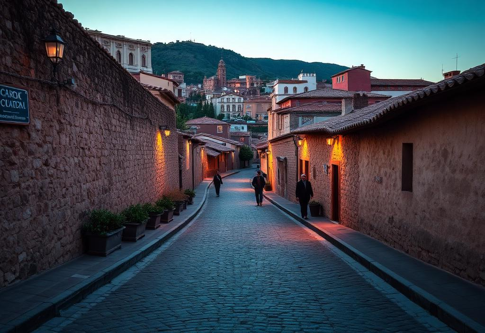

Chapter I · Days 1–4
Arrival into the Sacred Valley
Cusco
Arrival, private welcome, acclimatisation. Restored colonial residence in the historic quarter.
Pisac
Ancient market and Inca citadel. Ofrenda alla Pachamama — a quiet offering to the land before the journey begins.
Ollantaytambo
One of the most intact Inca urban centres. Private guided interpretation at dawn.
Machu Picchu
Arrival via the Belmond Hiram Bingham train. Early-access entry — the first to enter, before the valley opens to the wider world.